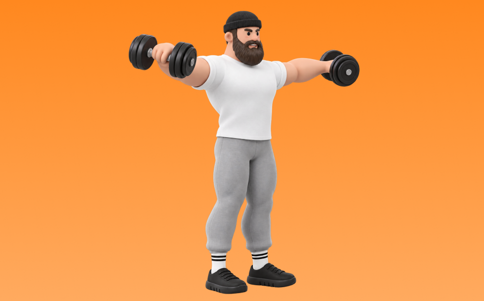
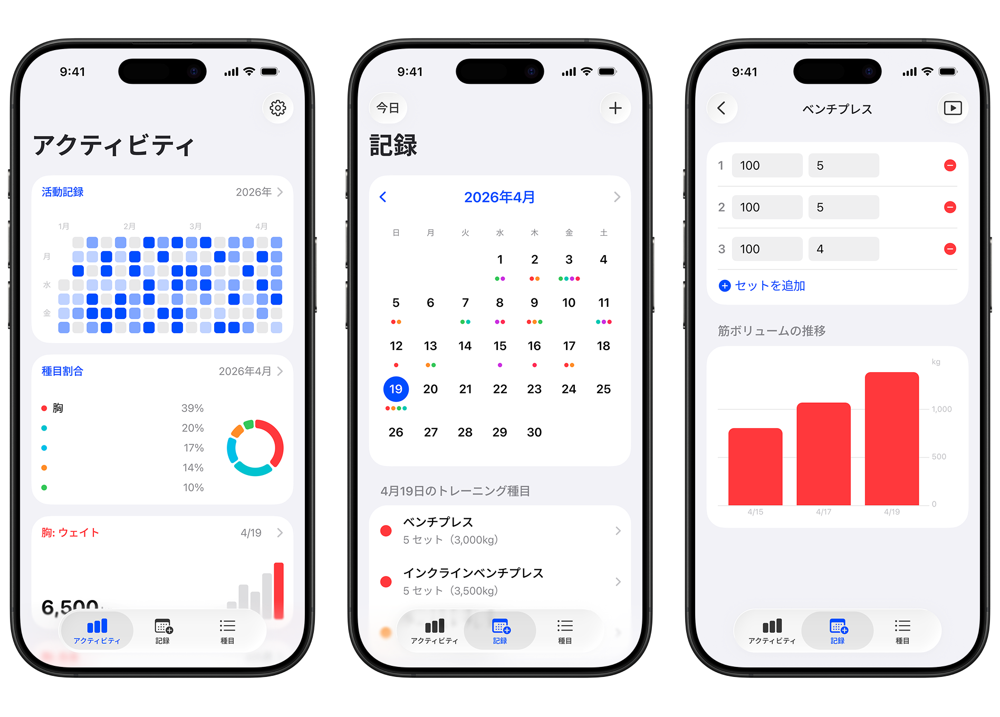

サイドレイズ

サイドレイズとは、ダンベルを使って「腕を横に上げる」動作で肩中部（三角筋中部）を鍛える種目です。可動域が広く、左右のバランスを整えやすいのが特徴で、反動を抑えてコントロールしながら反復します。肩幅を作り、逆三角形のシルエットづくりが期待できます。
- 対象部位
- 肩
- 器具
- ダンベル
- 記録形式
- 重量・回数
- 別名
- ラテラルレイズ
YouTube動画
-
【肩(三角筋)筋トレ】サイドレイズのやり方・フォーム・コツ | 「肩が痛くならない」初心者向け動作をご紹介！
-
三角筋中部を鍛えるサイドレイズのやり方【解説】
-
サイドレイズ正しいやり方とNGフォーム！プロビルダーが教える確実に効く2種目！
-
【筋トレ】このサイドレイズをやっている人は要注意！確実に肩に効かせる方法を解説します【肩トレ】
-
【効くのは肩だけ】僧帽筋に効かせないサイドレイズのやり方
-
9割の人が知らないサイドレイズの効かせ方
-
【柔道整復師が解説】サイドレイズの”良いフォーム”が肩を痛める5つの原因
-
横川尚隆のメロン肩をつくるサイドレイズ解説！！
-
サイドレイズの正しいやり方｜肩の筋肉を効果的に鍛える
-
【肩トレ】ボディビル日本王者が徹底解説！サイドレイズはこの3つをマスターすれば確実に効きます！
-
【肩トレ】日本一の肩はこれでできた！西崎空良選手が教えるサイドレイズの極意【新・バズーカ岡田チャンネル】 #バズーカ岡田
-
サイドレイズは横に上げません。50歳以上はこのサイドレイズで肩の三角筋をつけるべき！
-
【永久保存版】世界王者のサイドレイズを徹底解説!! 有料級の極秘テクニックを完全公開。
-
サイドレイズで肩を大きくするやり方を徹底解説！三角筋中部を効果的に鍛えるポイント10選＆練習法！
-
サイドレイズで三角筋中部に効かない原因を改善して効果的に鍛えるやり方＆フォームの練習法を解説【脱初心者】
-
肩の筋肉・三角筋を鍛える「サイドレイズ」の正しいやり方【15回×3セット】
-
【三角筋】1年間ほぼ毎日サイドレイズで筋肥大したフォームと筋肥大しないフォーム【中部】
-
肩トレの基本！初心者の方に知ってほしいサイドレイズの極意
-
【サイドレイズ】難しいサイドレイズのポイントは？ケーブルでの鍛え方も紹介！ 【新・バズーカ岡田チャンネル】 #バズーカ岡田
YouTubeショート
-
サイドレイズのやり方🔥 #筋トレ #サイドレイズ #肩トレ #筋肉社長
-
このサイドレイズはやめろ！#shorts
-
寺島遼選手に学ぶサイドレイズ
-
怪我をしないための超丁寧なサイドレイズを持田選手が教えてくれました！！#トレーニング #筋トレ #volix #fitness #workout #肩トレ
-
サイドレイズのやり方間違ってる
-
サイドレイズはここを気をつけると全然肩が変わる！ #サイドレイズ #筋トレ #トレーニング
-
絶対にデカくなるサイドレイズやり方#筋トレ #肩トレ #筋トレ初心者 #shoulderworkout
-
サイドレイズを効かせるコツ！ #Shorts
-
世界一わかりやすいサイドレイズの効かせ方
-
こんなサイドレイズ今すぐやめて #short #youtubeshorts #プロテイン #筋肉博士 #筋トレ大学 #山本義徳 #サイドレイズ #肩トレ
-
【サイドレイズ解説】正しいトレーニングのやり方教えます！
-
サイドレイズやり方多すぎる
-
このサイドレイズ三角筋をうまく使えていません #フィットネス #筋トレ
-
みなさんはサイドレイズやってますか？持田選手（おかずもち）と薬剤師トレーニーさくらが三角筋に効くトレーニングをレクチャーしてくれました #筋トレ #volix #肩トレ #ちょこっと惜しい #女子トレ
-
サイドレイズのポイントはこれだ！【筋トレ】 #shorts
-
【ダンベル】肩トレ3選 #筋トレ
-
正しいサイドレイズのやり方 | ボディビル日本チャンピオンが解説 #shorts 【ビーレジェンド プロテイン】
-
サイドレイズの重量がわからなさすぎる件について #shorts #筋トレ #肩トレ #サイドレイズ
-
肩トレのやり方🔥〜インクラインサイドレイズ基礎編〜 #筋トレ #筋肉 #筋肉社長 #マッチョ #肩トレ
-
【サイドレイズ】よくある4つの間違い #パーソナルトレーナー #筋トレ #フィットネス #サイドレイズ #肩トレ
-
こんなサイドレイズはやめろ！正しいフォーム解説 #筋トレ
-
正しいショルダープレス4つのポイント #筋トレ
-
カネキン式サイドレイズのコツ
-
上里選手流に、サイドレイズのコツを聞いてみました。【Team ALLOUT 上里選手】
-
みなさんはサイドレイズやってますか？持田選手（おかずもち）とぶーちゃんが三角筋に効くトレーニングをレクチャーしてくれました！#筋トレ #volix #肩トレ #ちょこっと惜しい #女子トレ
-
正しいケーブルサイドレイズのやり方
-
爆発的に肩がデカくなるサイドレイズ
-
マシンを使ったショルダープレスのコツ
-
肩トレのやり方🔥 〜リアに効かせるトレーニング基礎編〜 #筋トレ #筋肉社長 #筋肉 #肩トレ
-
「こんなサイドレイズは超もったいない！」動作前に固定したい4箇所 #肩トレ #筋トレ初心者
動作方法
- 対象部位の力を抜かずに構える
- 反動を使わず、可動域を丁寧に使う
- 戻し動作をゆっくり行う
動作ポイント
- 可動域を急に狭めない
- 対象部位の緊張を保つ
ワンポイントアドバイス
- 重量よりも肩の軌道を安定させる
- 首まわりの力みを減らして行う
目的別回数設定
目的や体力に応じた一般的な目安です。無理のない範囲で調整してください。
- 筋力アップ
- 1〜5回
- 筋肥大
- 6〜12回
- 持久力アップ
- 13〜20回
YouTube動画について
動画はYouTubeの公開情報をもとに表示しています。内容は投稿者によるもので、Biggrによる監修ではありません。
アプリを入手
筋トレやトレーニングの記録はBiggrにお任せください。今すぐ無料で使い始められます。
